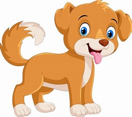
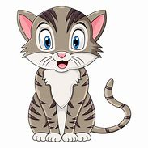

Reproduza o som de um cachorro ou gato
O som devera ser o do proprio animal, por favor nao lata nem miê no microfone
O som devera ser de um Gato ou de um Cachorro.
Identficar
 
feito por alunos da Byjus